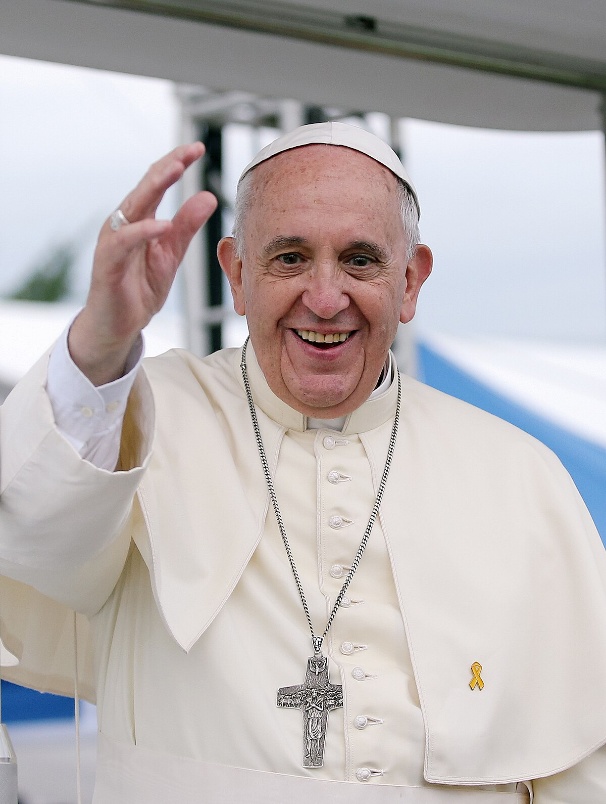

Om Påven Franciskus

Jorge Mario Bergoglio
Påven Franciskus, född Jorge Mario Bergoglio den 17 december 1936 i Buenos Aires, Argentina, är den nuvarande påven och därmed biskop av Rom och ledare för den katolska kyrkan. Han valdes till påve den 13 mars 2013 och är den första påven från Amerika, den första från södra hemisfären och den första jesuiten som blivit påve.
Innan han blev påve tjänade Franciskus som ärkebiskop av Buenos Aires från 1998 och blev kardinal 2001. Han är känd för sitt enkla leverne, sitt engagemang för de fattiga och sin ödmjuka inställning.